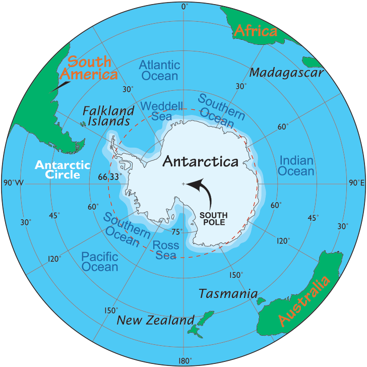
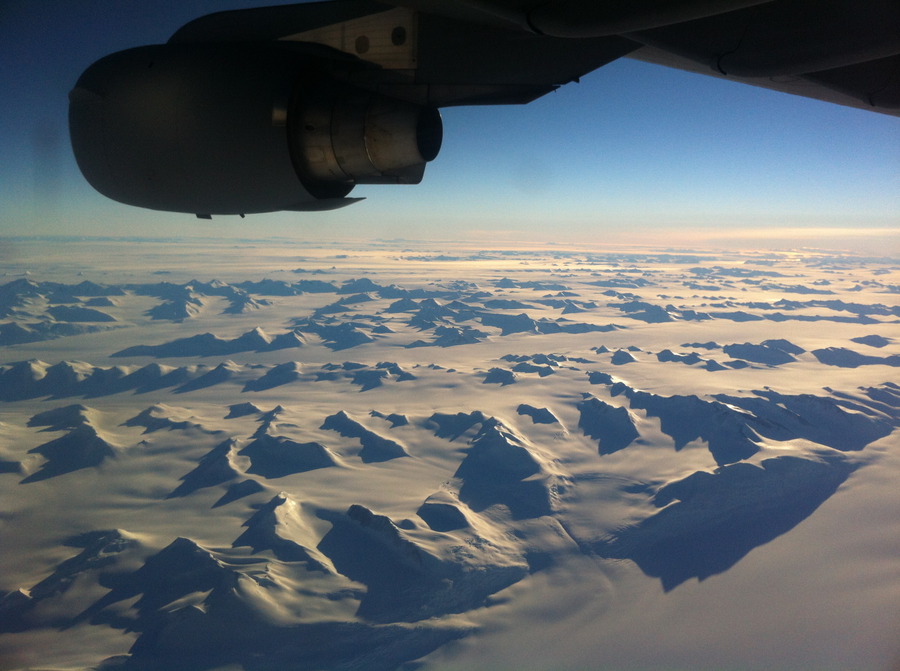
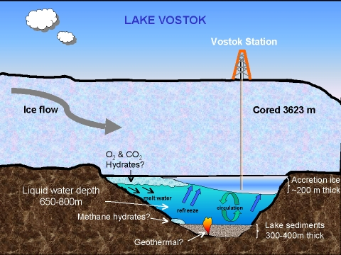
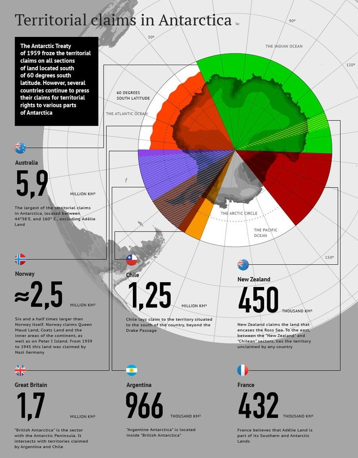

Physical Geography
Location and Size
Antarctica is Earth's southernmost continent, containing the geographic South Pole. It is situated in the Antarctic region of the Southern Hemisphere, almost entirely south of the Antarctic Circle, and is surrounded by the Southern Ocean.
Area: 14.2 million km² (5.5 million sq mi)
Highest point: Vinson Massif (4,892 m/16,050 ft)
Ice thickness: Average 1.9 km (1.2 mi)
Major Geographic Features

Transantarctic Mountains
Divide East and West Antarctica, stretching over 3,500 km

Ross Ice Shelf
Largest ice shelf, about the size of France

Subglacial Lakes
Over 400 lakes beneath the ice, including Lake Vostok
Political Geography
Territorial Claims
Seven countries maintain territorial claims in Antarctica, though these claims are not universally recognized and are suspended under the Antarctic Treaty System:
| Country | Claimed Territory | Area (km²) |
|---|---|---|
| Argentina | Argentine Antarctica | 1,461,597 |
| Australia | Australian Antarctic Territory | 5,896,500 |
| Chile | Chilean Antarctic Territory | 1,250,257 |
| France | Adélie Land | 432,000 |
| New Zealand | Ross Dependency | 450,000 |
| Norway | Queen Maud Land | 2,700,000 |
| United Kingdom | British Antarctic Territory | 1,709,400 |